HTTPS的加密原理
1. 介绍
HTTP 协议在 web 世界得到广泛使用，但由于采用明文传输，会存在以下问题：
- 通信的内容可能会被窃听，可能会泄露用户的信息；
- 无法验证通信方的身份，可能遭遇伪装的服务器；
- 无法验证报文是否遭遇篡改。
因此，在高可靠性的场合，例如银行登录、转账等，都会采用安全的 HTTPS 协议。HTTPS 其实是将HTTP 的通信接口部分用 SSL（Secure Socket Layer）和 TLS（Transport Layer Security）协议代替而已，默认端口是 443。
SSL 是由 Netspace 公司设计的，3.0 版本得到大规模使用。后来互联网标准化组织 ISOC 接替 Netspace，发布了 SSL 的升级版 TLS 1.0（设计上与 SSL 3.0 几乎没有区别，TLS 1.0 通常被标示为 SSL 3.1），并在后续分别推出 TLS 1.1、TLS 1.2 和 TLS 1.3。
HTTP 直接和 TCP 通信，HTTPS 先与 SSL 通信，再由 SSL 和 TCP 通信。
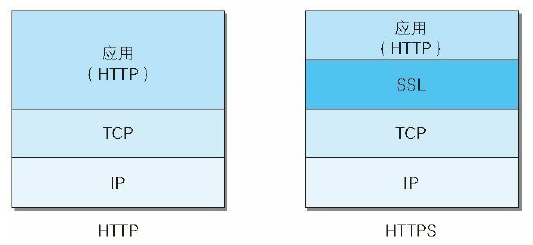
2. 密码学基础
在了解 HTTPS 的加密原理之前，需要先介绍一点密码学基础。
2.1 对称加密
密码学中有以下几个基础概念：
- 明文：原始数据，一般是有意义的字符和数据，例如用户密码
- 密文：对明文进行加密便成为了密文
- 加密：将明文转换为密文的变换过程
- 解密：将密文恢复为明文
对称加密指的是加密和解密用的密钥是相同的，类似日常生活中的钥匙。
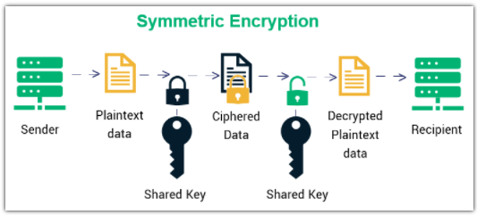
2.2 非对称加密
非对称加密也称公钥加密，有两把密钥：公钥和私钥，顾名思义，公钥是公开给所有人的，而私钥是自己持有的。用公钥加密的内容只有私钥才能解开，私钥加密的内容只有公钥才能解开。
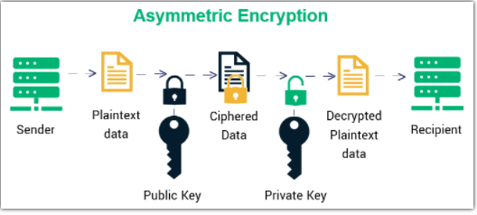
3. 加密分析
接下来将对各种加密方式进行分析，并推导出 SSL 的加密方式。
3.1 使用对称加密
如果通信双方持有相同的密钥，并且密钥没有泄露，那么通信安全是可以保证的。
遗憾的是防止密钥泄露是很困难的。如果由服务器生成密钥传输给浏览器，中间的传输过程密钥可能被劫持，那么劫持者可以使用密钥解密双方的传输内容，这么做显然不可行。
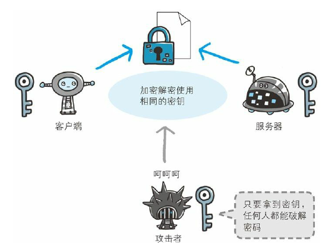
3.2 使用非对称加密
使用对称加密是无法保证安全的，需要采用非对称加密。一个直观想法是服务器保留一组公钥和私钥，服务器先把公钥以明文方式传输给浏览器， 浏览器传给服务器的数据都用这个公钥加密，那么浏览器到服务器的数据就是安全的，但服务器发送公钥的过程仍可能会被劫持，劫持者可以通过公钥解密服务器传给浏览器的数据了，只能保证单向传输的安全。
如果浏览器也维护一组公钥和私钥，就能解决上面的问题了：
- 服务器拥有公钥 A 和 私钥 A‘，浏览器拥有公钥 B 和私钥 B’；
- 浏览器把 B 传输给服务器，服务器把 A 传输给浏览器；
- 浏览器向服务器发送的数据使用 A 加密，服务器使用 A’ 解密，保证了浏览器到服务器的数据安全；
- 服务器向浏览器的数据使用 B 加密，浏览器使用 B’ 解密，保证了服务器到浏览器的数据安全。
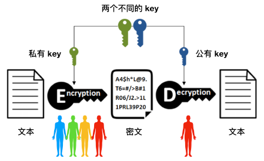
抛开一个漏洞（中间人攻击，下文将进行介绍）不谈，使用两组公钥和私钥是能实现安全传输的，但是非对称加密非常耗时，会大幅度增加通信延时。
3.3 非对称加密+对称加密
非对称加密耗时严重，需要尽量减少，可以组合非对称加密和对称加密：
- 服务器拥有公钥 A 和 私钥 A‘；
- 浏览器向服务器发送请求，服务器把公钥 A 明文传给浏览器；
- 浏览器生成一个对称加密的密钥 X，用公钥 A 加密后传给服务器；
- 服务器使用私钥 A’ 解密出 X；
- 双方使用 X 进行对称加密传输。
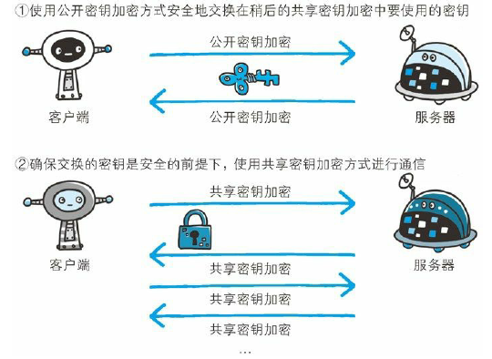
上面的过程只有一次非对称加密，并解决了安全问题，HTTPS 基本采用了这种思路，但仍存在漏洞，那就是中间人攻击。
3.4 CA证书
3.4.1 中间人攻击
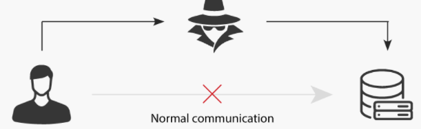
中间人攻击指中间人掉包了服务器的公钥，进而得到了对称加密的密钥：
- 服务器向浏览器发送公钥 A 的过程中，中间人劫持并保存 A，替换成自己的公钥 B 发送给浏览器；
- 浏览器生成对称加密的密钥 X，并使用 B 加密发送给服务器；
- 中间人劫持后，解密得到 X，再用 A 加密发送给服务器。中间人可以得到浏览器和服务器中传输的所有数据。
3.4.2 CA证书
上述问题的根本原因是浏览器无法确认收到的公钥是不是网站自己的，解决方案是 CA 机构颁布的证书。网站使用 HTTPS 时，需要向 CA 机构申请一份数字证书，证书中包含网站的信息和公钥。
为了防止证书被篡改，数字证书采用了数字签名，生成过程如下：
- CA 机构拥有非对称加密的公钥和私钥；
- CA 对证书明文进行哈希，再对哈希值用私钥加密，得到数字签名。
浏览器拿到服务器发送的证书之后，进行如下验证：
- 得到明文和数字签名，使用 CA 机构的公钥（保存在浏览器）对数字签名解密，得到哈希 H；
- 用证书中的哈希算法对明文进行哈希，得到 H’；
- H = H‘，则证书可信。
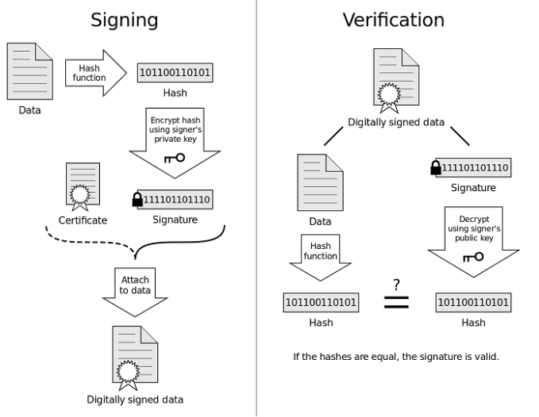
综上，便可以使用对称加密 + 非对称加密 + CA 证书实现安全又比较高效的通信了，这也是 HTTPS 真正采用的方式。
既然 HTTPS 安全可靠，为什么所有的网站不都用 HTTPS呢？一方面是虽然混合加密减少了计算量，但仍会增加不小的开销，HTTPS 的握手时延相较于 HTTP 也有所提升，综合考虑 HTTPS 会比 HTTP 慢上 2 - 100 倍；另一方面，证书的费用是一笔不小的开销。
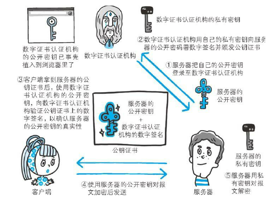
4. SSL连接过程
上文已经介绍了 HTTPS 的加密原理，加下来将介绍 SSL 的连接过程，如下图所示：
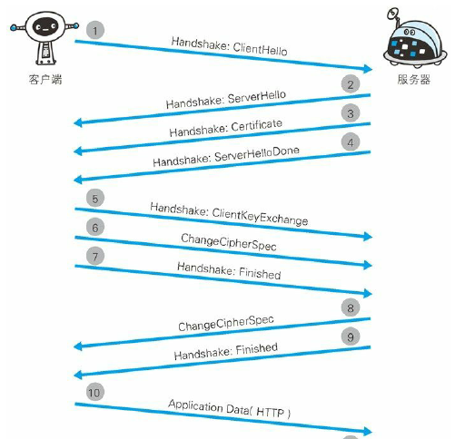
- 步骤 1：客户端发送 Client Hello 报文开始 SSL 通信，报文中包含支持的 SSL 版本、加密算法和一个随机字符串 client random；
- 步骤 2：服务端应答 Server Hello 报文，报文中也包含支持的 SSL 版本、加密算法（从 Client Hello 报文中筛选的）和一个随机字符串 server random；
- 步骤 3：服务端发送 Certificate 报文，包含数字证书（公钥+电子签名）；
- 步骤 4：服务端发送 Server Hello Done，最初的握手协商结束；
- 步骤 5：客户端验证数字签名后，生成密钥 premaster secret，并用公钥加密，发送 Client Key Exchange 报文；
- 步骤 6：客户端继续发送 Change Cipher Spec 报文，提醒服务端之后的通信都会采用对称加密；
- 步骤 7：客户端和服务器根据 client random、server random、 premaster secret 三个字符串和加密算法生成对称加密的密钥。客户端发送对称加密后的 Finished 报文，此次握手协商能否成功，取决于服务端能否解密这个报文；
- 步骤 8：服务器同样发送 Change Cipher Spec 报文；
- 步骤 9：服务器同样发送 Finished 报文；
- 步骤 10：SSL 连接建立，可以发送数据报文。
5. 总结
本文介绍了 HTTP 协议存在的问题，引出 HTTPS 协议，HTTPS 可以看成 HTTP 和 SSL/TLS 的组合。从密码学的基础出发，介绍了对称加密、非对称加密、混合加密三种方案，对称加密无法实现安全通信，非对称加密耗时严重，混合加密综合了两者的优势。对于都存在的中间人攻击问题，引入 CA 证书进行验证，最后介绍了 SSL 连接建立的过程。
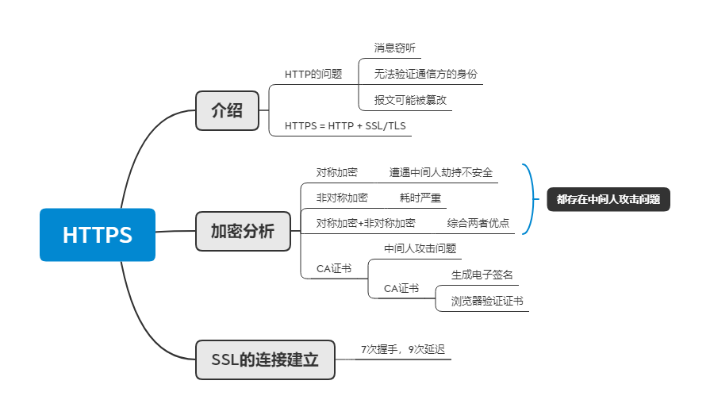